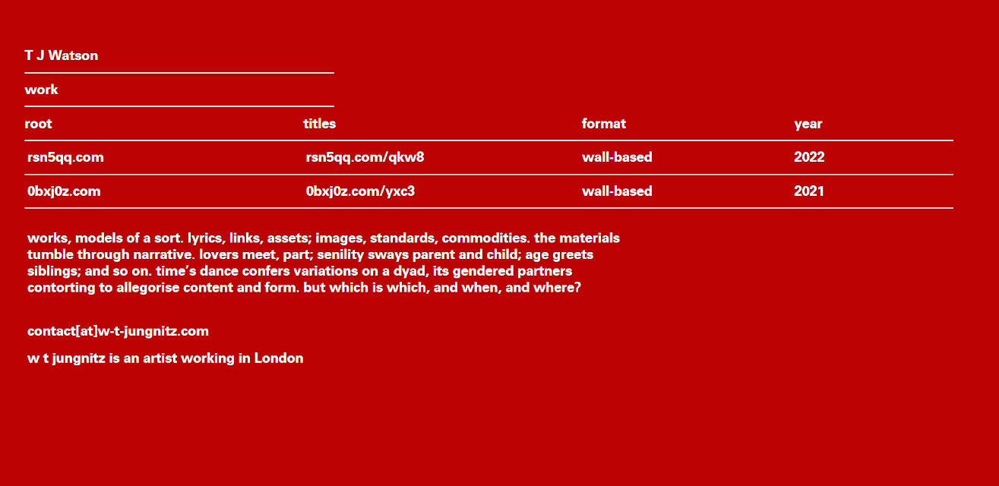

I'm a Front-End Web Developer with an interest in Accessibility. I have a fine art background, and want to learn and help contribute to developing the best practices of accessible approaches and solutions to Web Development.
ABOUT

WORK
Founders and Coders Projects
ODVAR: A Javascript-built RPG Game
introduced lots of access approaches into a complex RPG tutorial involving heavy use of classes.
Application Website for Founders and Coders
first implementation of "Access Settings" design.
Basic "Pong" style audio access game
Using the native synthesiser in vanilla Javascript. The ball's pitch changes depending on x and y location. The paddle updates its position with a sound relative to the x position of the ball.
Movie Data Project
Sorting Objects and Arrays based on radio button selections in Javascript.
Freelance Websites
Mike Timms
Actor's portfolio website showcasing Headshots, Biography, and a Showreel, using simple anchor navigation.
Thomas Watson
Artist's website indexing several disparate projects on one page, using a basic show/hide menu.